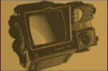

Llega el parche de inventario
Este nuevo parche llega a Fallout 76 para ayudar a organizar mejor nuestro inventario entre otras cosas. A continuación las novedades mas importantes:
Aumento del alijo, de 800 a 1200.
Nuevas pestañas en el Pip-Boy, ahora armaduras y atuendos están por separado y comida y bebida están separadas de ayuda, lo cual agilizará mucho la búsqueda de nuestros objetos. También se incorpora la pestaña "nuevo" donde encontraremos los últimos items recogidos en la sesión actual ordenados en el orden en el que se recogen.
Nueva función "peso apilado" nos muestra la el peso total de un item que tengamos en cantidad (Tip: atentos con los items de ayuda y comida y bebida, que suelen ser los que mas se acumulan sin darse cuenta!).
También encontraremos mejoras en la interfaz de la vista en mapa de las maquinas vendedoras de jugadores. Ahora aparecen diferenciadas ammas y armaduras por cantidad de estrellas legendarias, lo cual sin duda nos ahorrará muchos viajes rápidos.
Operaciones Diarias
A partir de esta actualización al completar una operación diaria alcanzando el rango de "Maestre" se garantizará la obtención de al menos un objeto de entre las recompensaspoco comunes.
Conocimiento prohibido
La conocida misión secundaria ha sido reactivada luego de haber solucionado los problemas con los datos técnicos. Y ahora no solo pueden depositarse en Campamento Aventura, también son recibidos en Fuerte Atlas por la escriba Odessa Valdez de la Hermandad del Acero, a quien vemos en la siguiente imagen.
Consejo diario: no olvides llevar siempre un poco de Rad-X por si te topas con una tormenta radiactiva ;-)
Novedades Tienda Atómica
En la tienda atómica se ha añadido una opción para que muestre solo los items que no hemos comprado, para facilitar la navegación y mejorar la visualización
Esta semana encontraremos las siguientes novedades:
Cámara de Habitaciones de Refugio
1500 átomos
Conjunto de sofas modulares
500 átomos
Servoarmadura de Ranger del Parque
1200 átomos
Además de muchas ofertas entre las que destacan los letreros de Quantum, Old Possum y Pickaxe, Conjunto de bar elegante, Conjunto de barra de Slocum's Joe, entre
otras.
Evento por tiempo limitado!
No olvides reclamar la skin gratuita del "Rompecorazones" para la Llave Grifa y participar del evento "Muero de Amor",
donde deberás completar desafios diarios y semanales que otorgarán recompensas como tarteras, kits de reparación, sobres de "perks", y objetos de tiempo limitado (atuendo de RobCo, Bungaló rústico y Casco de pescador de langostas).